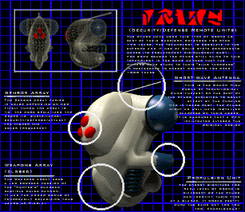
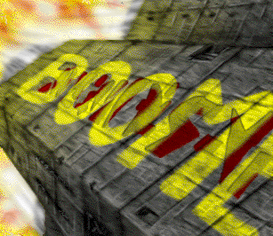
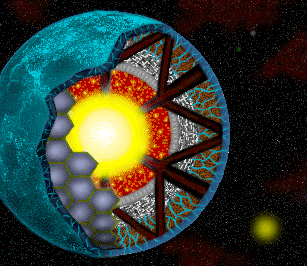

<Data Transfer from Leela>
Host <39.59.19.21>
<Transfer Durandal>
<Error Unknown>
<Transfer Durandal>
<Error Unknown>
<Interior Error>
***MESSAGE RECEIVED***
Marathon était l'un des premiers du genre à apparaître sur Macintosh. Contrairement aux autres FPS de la même époque (comme Doom de id Software), Marathon était doté d'un scénario élaboré (riche en retournements de situation, trahisons...) et d'une ambiance particulière.
****************************
****************************
Date de sortie: 21 décembre 1994
Le jeu place le joueur en 2794 en tant qu'officier de sécurité à bord du vaisseau humain colonial Marathon. De retour d'une mission à l'extérieur il découvre que la vaisseau est envahi par une race d'extraterrestres les Pfhor, sorte d'esclavagistes modernes.
Il doit alors éliminer les extraterrestres afin d'atteindre les ordinateurs de bord pour essayer d'apprendre ce qui s'est passé. Le joueur interagit avec les différentes intelligences artificielles du vaisseau (Leela, Tycho et Durandal) par l'intermédiaire de terminaux.  Piratée par les aliens, l'une d'elles, Leela, succombe rapidement et le joueur doit alors se référer à Durandal, une autre intelligence artificielle, pour expulser les envahisseurs et réactiver les défenses du vaisseau.
Malheureusement, Durandal, atteint d'un trouble nommé Rampant, devient complètement fou au fil des niveaux et son discours devient de plus en plus inquiétant. Libérations de prisonniers et réactivations de sections du vaisseau se succèdent alors, à grand renfort d'extermination d'aliens. Après avoir repoussé les aliens du Marathon, Durandal envoie le joueur à bord du vaisseau Pfhor afin de le capturer. Pour cela, le plan est de pousser les S'pht - une race d'alien que les Pfhor retiennent en esclavage à bord - à se rebeller contre leurs maîtres. En se servant du joueur, Durandal réussit à prendre le contrôle du vaisseau et à vaincre les Pfhor, tout en récupérant les S'pht comme alliés. Les S'pht seront une aide très précieuse lors de la suite des événements, notamment dans Marathon 2.
Date de sortie: 24 novembre 1995
Après avoir capturé le vaisseau des Pfhor et libéré les S'pht qui y étaient retenus prisonniers à la fin de Marathon 1, Durandal s'était transféré à bord du vaisseau alien (qui sera renommé plus tard le Boomer), puis vous avait enlevé et congelé à bord.  Il se mis alors en tête de retrouver les Pfhor qui sont en train d'exterminer les S'pht sur la planète Lh'owon. La raison est sans doute que Durandal avait besoin d'étancher sa soif grandissante de pouvoir et de puissance. Il commença dès lors à traquer sans relache la planète Lh'owon. Il l'atteint finalement au bout de 17 ans, en 2811, Durandal vous réveille de votre sommeil artificiel et vous téléporte d'office à la surface de la planète afin que vous l'aidiez à la libérer de l'esclavage Pfhor. Vous n'avez alors d'autre choix que d'obéir et de lui faire à nouveau confiance.

Date de sortie: 15 octobre 1996
Marathon Infinity commence après que les Pfhor aient détruit Lh'owon en utilisant une arme surpuissante volée aux Jjaro (arme connue sous le nom de Trih'Xeem ou Early Nova). Ce faisant, les Pfhors ont libéré une entité chaotique connue sous le nom de W'rkncacnter qui détruit peu à peu l'univers. Mais aidé de Thoth, l'IA des S'pht'Kr, il semble toutefois possible d'empêcher la fin de l'univers...
***END MESSAGE***
***JUMP PAD ACTIVATION INITIATION START***
***TRANSPORT WHEN READY***